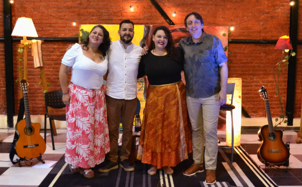

?? Formosa
Son del Río
Cuarteto vocal formoseño que combina armonías de raíz folklórica con repertorios de América Latina. Ganadores del Pre Cosquín 2024 en el rubro Conjunto Vocal y representantes de Formosa en los Encuentros Nacionales de Grupos Vocales.